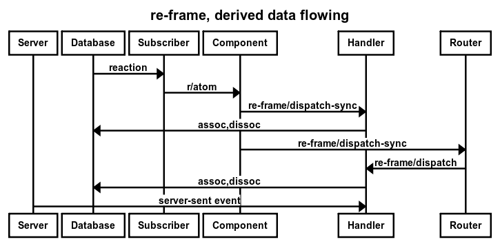
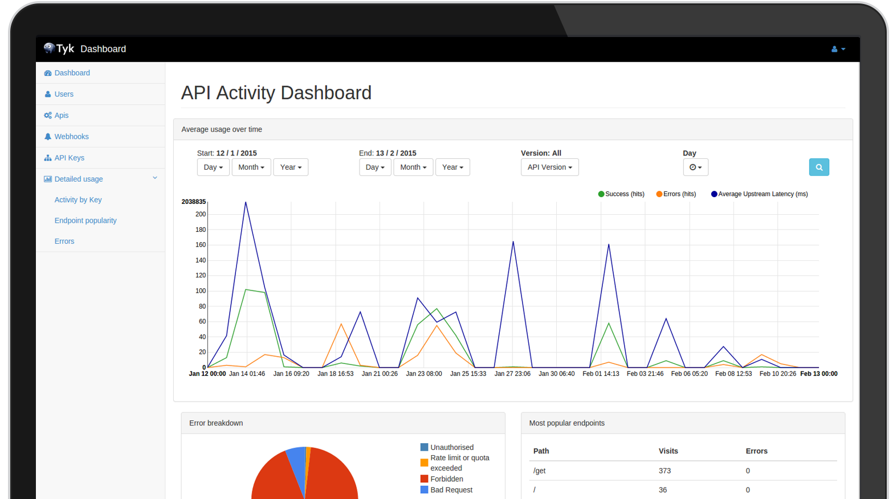

(def click-count (r/atom 0))
(defn state-ful-with-atom []
[:div {:on-click #(swap! click-count inc)}
"I have been clicked " @click-count " times."])


(def default-db
{:cards
{:resources
{:title "Resources"
:supporting-text "Resources that have been accessed,
showing recent requests, state changes."
:background :#455A64
:actions ["Show"]}
:active-card {:id nil}})
(to respond to changes in the database)
(re-frame/register-sub
:active-card
(fn [db _]
(reaction (:active-card @db))))
(ns yada.console.routes
(:require [bidi.bidi :as bidi]
[pushy.core :as pushy]
[re-frame.core :as re-frame]))
(def routes
["/console/" {"" :cards
["card/" [keyword :card-id]] :card}])
(defn- dispatch-route [match]
(case (:handler match)
:cards (re-frame/dispatch [:show-all-cards])
:card (re-frame/dispatch [:card-click (-> match :route-params :card-id)])))
(def history (pushy/pushy dispatch-route (partial bidi/match-route routes)))
(defn init []
(pushy/start! history))
(defn set-token! [token]
(pushy/set-token! history token))
(defn path-for [tag & args]
(apply bidi/path-for routes tag args))
(re-frame/register-handler
:initialize-db
(fn [_ _] db/default-db))
(re-frame/register-handler
:card-click
(fn [db [_ card-id]]
(assoc db :active-card {:id card-id})))
(re-frame/register-handler
:show-all-cards
(fn [db _]
(dissoc db :active-card)))
(require
'[juxt.mdl.layout :as lo])
(defn cards [cards]
[grid
(for [card-id (keys cards)]
[cell 4 [card card-id]])])
(defn main-panel []
(let [db (re-frame/subscribe [:db])]
(fn []
[lo/layout [header]
[lo/content
[:div.page-content
[cards (:cards @db)]]]])))
(defn ^:export init []
(reagent/render [main-panel] (.getElementById js/document "app")))
(defn card [id]
(let [card (re-frame/subscribe [:cards id])
active-card (re-frame/subscribe [:active-card])]
(fn []
(let [active (= id (:id @active-card))]
[:div.demo-card-wide.mdl-card.mdl-shadow--2dp
(when active {:class "active-card"})
[:div.mdl-card__title
{:on-click (fn [ev] (set-token! (path-for :card :card-id id)))
:style
(let [background (:background @card)]
(if background
{:background (cond (string? background) (str "url('" background "') center / cover;")
(keyword? background) (-name background))}
{:background "#002"}))}
[:h2.mdl-card__title-text (:title @card)]]
[:div.mdl-card__supporting-text (:supporting-text @card)]
[:div.mdl-card__actions.mdl-card--border
(if (not active)
[:a.mdl-button.mdl-button--colored.mdl-js-button.mdl-js-ripple-effect
{:href (path-for :card :card-id id)}
"Show"])]
[:div.mdl-card__menu
(if active
[:button.mdl-button.mdl-button--icon.mdl-js-button.mdl-js-ripple-effect
{:on-click (fn [ev] (set-token! (path-for :cards)))}
[:i.material-icons "close"]])]]))))
<!doctype html>
<html lang="en">
<head>
<meta charset="utf-8">
<meta http-equiv="X-UA-Compatible" content="IE=edge">
<meta name="description" content="A console for visualising what happens when yada receives and processes HTTP requests.">
<meta name="viewport" content="width=device-width, initial-scale=1">
<title>yada console</title>
<link rel="stylesheet" href="/material.min.css">
<script src="/mdl/material.min.js"></script>
<link rel="stylesheet" href="/fonts.css">
<link rel="stylesheet" href="/console.css">
</head>
<body>
<div id="app"/>
<script src="/react/react.min.js"></script>
<script src="/cljs/out/goog/base.js"></script>
<script src="/cljs/console.js"></script>
<script type="text/javascript">goog.require("yada.console.core");</script>
<script>yada.console.core.init()</script>
</body>
</html>